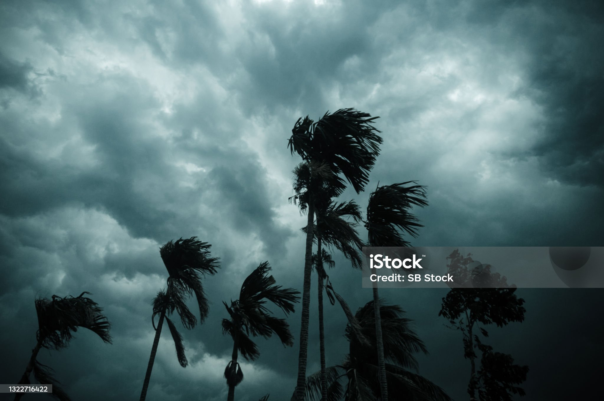

Response On Flood
Cyclones, powerful tropical storms, unleash strong winds and heavy rains, causing widespread destruction. Our Cyclone Guide empowers you with essential insights to understand, prepare, and respond effectively to these natural phenomena. Stay informed, stay safe, and contribute to community resilience in the face of tropical cyclones.

Preparing for a cyclone involves taking proactive measures to ensure personal safety and protect
property. Here's a concise guide on how to prepare for a cyclone:
Stay Informed:
Monitor weather updates and cyclone warnings from reliable sources.
Sign up for emergency alerts and notifications.
Create an Emergency Kit:
Assemble a comprehensive emergency kit with essentials like water, non-perishable food, first aid
supplies, flashlight, batteries, and important documents
Secure Your Home:
Reinforce windows with storm shutters or board them up.
Trim trees and secure loose outdoor items that could become projectiles.
Evacuation Plan::
Familiarize yourself with local evacuation routes and shelters.
Plan for the evacuation of family members, pets, and important documents.
Communication Plan:
Establish a communication plan with family members. Ensure everyone knows where to meet in case of
separation.
Insurance:
Review your insurance policies, ensuring coverage for wind and flood damage caused by cyclones.
Backup Power
Have a generator or backup power source to ensure essential appliances and communication devices remain
functional.
Emergency Contacts:
Save emergency contacts, including local authorities, emergency services, and relief organizations, in
your phone.
Secure Important Documents:
Safeguard important documents like identification, insurance policies, and medical records in waterproof
containers.
Community Support:
Collaborate with neighbors and community organizations. Share information and resources to strengthen
collective preparedness.
Stay Inside:
Stay indoors and away from windows during the cyclone. Seek shelter in a sturdy part of your home.
By taking these steps, you enhance your preparedness and resilience in the face of a cyclone. Stay
vigilant, stay informed, and follow official guidance to ensure your safety and the safety of your
community.